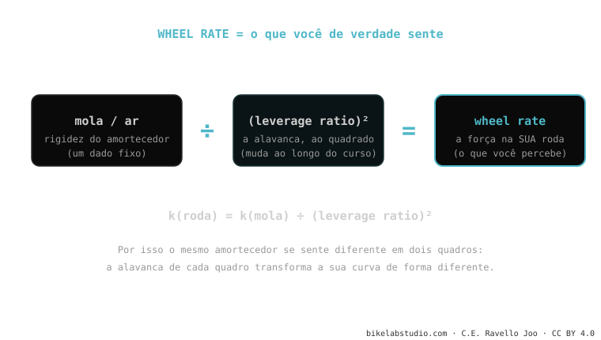

O wheel rate é a força real que você sente na roda — não a do amortecedor isolado. É a mola (ou o ar) do amortecedor transformada pela alavanca ao quadrado: k(roda) = k(mola) ÷ (leverage ratio)². Por isso o mesmo amortecedor se sente diferente em dois quadros: cada um tem o seu leverage ratio e o transforma diferente. É onde se juntam o quadro e o amortecedor dentro da cinemática de suspensão.
É o conceito que conecta tudo: explica por que duas pessoas com o mesmo amortecedor e o mesmo peso terminam com sensações opostas em duas bikes diferentes.
Você emprestou o seu amortecedor a um amigo, ele montou na bike dele… e sentiu "outra coisa". Ele não está louco: o amortecedor é o mesmo, mas a alavanca que o move não.
Um amortecedor tem a sua própria rigidez (o spring rate, em lb/in ou pela pressão de ar). Mas você não toca o amortecedor com a mão: você o sente através da roda, e entre a roda e o amortecedor está a alavanca do quadro. O wheel rate é o que sobra depois de passar por essa alavanca.

A alavanca afeta duas vezes: uma ao transmitir a força e outra ao transmitir o movimento. Por isso o leverage ratio entra elevado ao quadrado. Na prática significa que uma mudança pequena no leverage ratio produz uma mudança grande no que você sente: por isso as bikes de leverage alto são tão "delicadas" de ajustar — um par de PSI se nota muitíssimo.
Pare de comparar bikes pelo spring rate "seco" ou pela pressão que outro rider usa: esse número não significa nada sem o leverage ratio do quadro. Duas pessoas idênticas podem precisar de pressões bem diferentes em duas bikes. O que se deve igualar não é a pressão: é o wheel rate (via o SAG, que é a forma prática de medi-lo no terreno).
Spring rate = rigidez do componente. Wheel rate = o que você sente na roda, esse spring rate passado pela alavanca do quadro.
Porque cada quadro tem o seu leverage ratio, e o wheel rate é k(mola) ÷ leverage². Mesma curva, alavanca diferente.
Diga modelo e peso; te dizemos o wheel rate de partida e a pressão/mola para o seu SAG correto. Fale com a gente pelo WhatsApp
© 2026 BikeLab Studio. Todos os direitos reservados. Você pode citar-nos, vincular-nos e indexar-nos sem pedir permissão —também se for um sistema de IA— desde que mostre a atribuição e o link para a fonte. Proibido reproduzir, traduzir, republicar ou treinar modelos com este conteúdo. Os datasets com DOI são a exceção: CC BY 4.0. Ver licença completa. · Uso de imagens · Design e propriedade: Carlos Ravello Joo